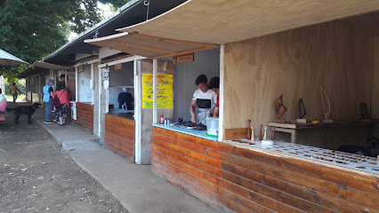
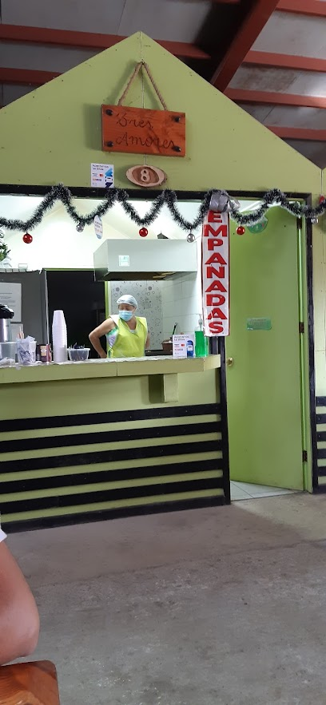
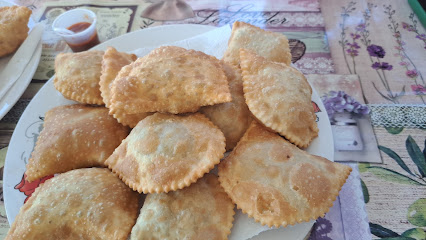
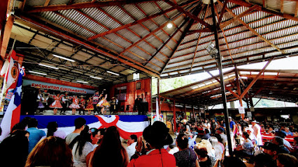
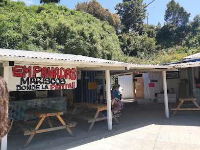
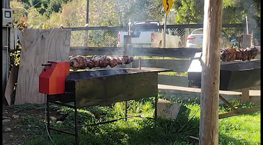
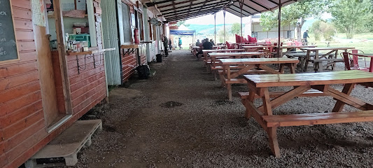
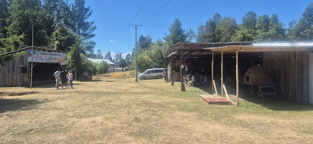
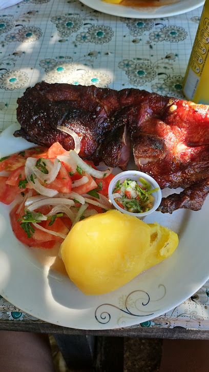
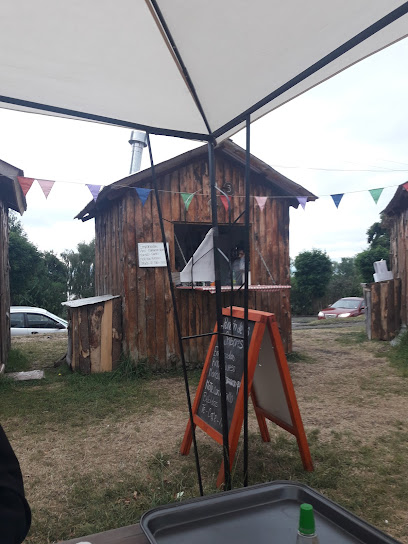

<!DOCTYPE html>
<html>
<head>
    
    <meta http-equiv="content-type" content="text/html; charset=UTF-8" />
    
        <script>
            L_NO_TOUCH = false;
            L_DISABLE_3D = false;
        </script>
    
    <style>html, body {width: 100%;height: 100%;margin: 0;padding: 0;}</style>
    <style>#map {position:absolute;top:0;bottom:0;right:0;left:0;}</style>
    <script src="https://cdn.jsdelivr.net/npm/leaflet@1.9.3/dist/leaflet.js"></script>
    <script src="https://code.jquery.com/jquery-3.7.1.min.js"></script>
    <script src="https://cdn.jsdelivr.net/npm/bootstrap@5.2.2/dist/js/bootstrap.bundle.min.js"></script>
    <script src="https://cdnjs.cloudflare.com/ajax/libs/Leaflet.awesome-markers/2.0.2/leaflet.awesome-markers.js"></script>
    <link rel="stylesheet" href="https://cdn.jsdelivr.net/npm/leaflet@1.9.3/dist/leaflet.css"/>
    <link rel="stylesheet" href="https://cdn.jsdelivr.net/npm/bootstrap@5.2.2/dist/css/bootstrap.min.css"/>
    <link rel="stylesheet" href="https://netdna.bootstrapcdn.com/bootstrap/3.0.0/css/bootstrap-glyphicons.css"/>
    <link rel="stylesheet" href="https://cdn.jsdelivr.net/npm/@fortawesome/fontawesome-free@6.2.0/css/all.min.css"/>
    <link rel="stylesheet" href="https://cdnjs.cloudflare.com/ajax/libs/Leaflet.awesome-markers/2.0.2/leaflet.awesome-markers.css"/>
    <link rel="stylesheet" href="https://cdn.jsdelivr.net/gh/python-visualization/folium/folium/templates/leaflet.awesome.rotate.min.css"/>
    
            <meta name="viewport" content="width=device-width,
                initial-scale=1.0, maximum-scale=1.0, user-scalable=no" />
            <style>
                #map_1051cc0dc17bbe0fe24de1bf7fcf87f6 {
                    position: relative;
                    width: 100.0%;
                    height: 100.0%;
                    left: 0.0%;
                    top: 0.0%;
                }
                .leaflet-container { font-size: 1rem; }
            </style>
        
    <script src="https://cdn.jsdelivr.net/npm/leaflet.fullscreen@3.0.0/Control.FullScreen.min.js"></script>
    <link rel="stylesheet" href="https://cdn.jsdelivr.net/npm/leaflet.fullscreen@3.0.0/Control.FullScreen.css"/>
    <script src="https://cdnjs.cloudflare.com/ajax/libs/leaflet.draw/1.0.2/leaflet.draw.js"></script>
    <link rel="stylesheet" href="https://cdnjs.cloudflare.com/ajax/libs/leaflet.draw/1.0.2/leaflet.draw.css"/>
    <script src="https://cdn.jsdelivr.net/gh/ljagis/leaflet-measure@2.1.7/dist/leaflet-measure.min.js"></script>
    <link rel="stylesheet" href="https://cdn.jsdelivr.net/gh/ljagis/leaflet-measure@2.1.7/dist/leaflet-measure.min.css"/>
    <script src="https://unpkg.com/leaflet-control-geocoder/dist/Control.Geocoder.js"></script>
    <link rel="stylesheet" href="https://unpkg.com/leaflet-control-geocoder/dist/Control.Geocoder.css"/>
</head>
<body>
    
    
            <div class="folium-map" id="map_1051cc0dc17bbe0fe24de1bf7fcf87f6" ></div>
        
</body>
<script>
    
    
            var map_1051cc0dc17bbe0fe24de1bf7fcf87f6 = L.map(
                "map_1051cc0dc17bbe0fe24de1bf7fcf87f6",
                {
                    center: [-39.82, -73.25],
                    crs: L.CRS.EPSG3857,
                    zoom: 11,
                    zoomControl: true,
                    preferCanvas: false,
                    drawExport: false,
                    layersControl: true,
                }
            );
            L.control.scale().addTo(map_1051cc0dc17bbe0fe24de1bf7fcf87f6);

            

        
    
            var tile_layer_bec8f4b3b7185fa3a5ed34f3ac226486 = L.tileLayer(
                "https://tile.openstreetmap.org/{z}/{x}/{y}.png",
                {"attribution": "\u0026copy; \u003ca href=\"https://www.openstreetmap.org/copyright\"\u003eOpenStreetMap\u003c/a\u003e contributors", "detectRetina": false, "maxNativeZoom": 19, "maxZoom": 24, "minZoom": 0, "noWrap": false, "opacity": 1, "subdomains": "abc", "tms": false}
            );
        
    
            tile_layer_bec8f4b3b7185fa3a5ed34f3ac226486.addTo(map_1051cc0dc17bbe0fe24de1bf7fcf87f6);
        
    
            L.control.fullscreen(
                {"forceSeparateButton": false, "position": "topleft", "title": "Full Screen", "titleCancel": "Exit Full Screen"}
            ).addTo(map_1051cc0dc17bbe0fe24de1bf7fcf87f6);
        
    
            var options = {
              position: "topleft",
              draw: {},
              edit: {},
            }
                // FeatureGroup is to store editable layers.
                var drawnItems_draw_control_6061e64ae64ea9874c59f80991a47963 =
                    new L.featureGroup().addTo(
                        map_1051cc0dc17bbe0fe24de1bf7fcf87f6
                    );

            options.edit.featureGroup = drawnItems_draw_control_6061e64ae64ea9874c59f80991a47963;
            var draw_control_6061e64ae64ea9874c59f80991a47963 = new L.Control.Draw(
                options
            ).addTo( map_1051cc0dc17bbe0fe24de1bf7fcf87f6 );
            map_1051cc0dc17bbe0fe24de1bf7fcf87f6.on(L.Draw.Event.CREATED, function(e) {
                var layer = e.layer,
                    type = e.layerType;
                var coords = JSON.stringify(layer.toGeoJSON());
                layer.on('click', function() {
                    alert(coords);
                    console.log(coords);
                });
                drawnItems_draw_control_6061e64ae64ea9874c59f80991a47963.addLayer(layer);
            });
            map_1051cc0dc17bbe0fe24de1bf7fcf87f6.on('draw:created', function(e) {
                drawnItems_draw_control_6061e64ae64ea9874c59f80991a47963.addLayer(e.layer);
            });

            
        
    
            var measure_control_ed521c5e6ce0ea90ee1813b54ef83157 = new L.Control.Measure(
                {"position": "bottomleft", "primaryAreaUnit": "sqmeters", "primaryLengthUnit": "meters", "secondaryAreaUnit": "acres", "secondaryLengthUnit": "miles"});
            map_1051cc0dc17bbe0fe24de1bf7fcf87f6.addControl(measure_control_ed521c5e6ce0ea90ee1813b54ef83157);

            // Workaround for using this plugin with Leaflet>=1.8.0
            // https://github.com/ljagis/leaflet-measure/issues/171
            L.Control.Measure.include({
                _setCaptureMarkerIcon: function () {
                    // disable autopan
                    this._captureMarker.options.autoPanOnFocus = false;
                    // default function
                    this._captureMarker.setIcon(
                        L.divIcon({
                            iconSize: this._map.getSize().multiplyBy(2)
                        })
                    );
                },
            });

        
    

            var geocoderOpts_geocoder_eb2353fd6a5a0948302199f911ffa320 = {"collapsed": true, "defaultMarkGeocode": true, "position": "topleft", "provider": "nominatim", "providerOptions": {}, "zoom": 11};

            // note: geocoder name should start with lowercase
            var geocoderName_geocoder_eb2353fd6a5a0948302199f911ffa320 = geocoderOpts_geocoder_eb2353fd6a5a0948302199f911ffa320["provider"];

            var customGeocoder_geocoder_eb2353fd6a5a0948302199f911ffa320 = L.Control.Geocoder[ geocoderName_geocoder_eb2353fd6a5a0948302199f911ffa320 ](
                geocoderOpts_geocoder_eb2353fd6a5a0948302199f911ffa320['providerOptions']
            );
            geocoderOpts_geocoder_eb2353fd6a5a0948302199f911ffa320["geocoder"] = customGeocoder_geocoder_eb2353fd6a5a0948302199f911ffa320;

            L.Control.geocoder(
                geocoderOpts_geocoder_eb2353fd6a5a0948302199f911ffa320
            ).on('markgeocode', function(e) {
                var zoom = geocoderOpts_geocoder_eb2353fd6a5a0948302199f911ffa320['zoom'] || map_1051cc0dc17bbe0fe24de1bf7fcf87f6.getZoom();
                map_1051cc0dc17bbe0fe24de1bf7fcf87f6.setView(e.geocode.center, zoom);
            }).addTo(map_1051cc0dc17bbe0fe24de1bf7fcf87f6);

        
    
            map_1051cc0dc17bbe0fe24de1bf7fcf87f6.fitBounds(
                [[-39.82, -73.25], [-39.82, -73.25]],
                {"maxZoom": 11}
            );
        
    
            var tile_layer_5cc9367a925f7e338b66589bf266f1be = L.tileLayer(
                "https://mt1.google.com/vt/lyrs=s\u0026x={x}\u0026y={y}\u0026z={z}\u0026key=YOUR-API-KEY",
                {"attribution": "Google", "detectRetina": false, "maxZoom": 24, "minZoom": 0, "noWrap": false, "opacity": 1, "subdomains": "abc", "tms": false}
            );
        
    
            tile_layer_5cc9367a925f7e338b66589bf266f1be.addTo(map_1051cc0dc17bbe0fe24de1bf7fcf87f6);
        
    
        L.Control.CustomControl = L.Control.extend({
            onAdd: function(map) {
                let div = L.DomUtil.create('div');
                div.innerHTML = `<div style="font-size: 20px; color: black; font-weight: normal;
            padding: 5px; background-color: white;
            border-radius: 5px;">Ferias Costumbristas en la Región de Los Ríos</div>`;
                return div;
            },
            onRemove: function(map) {
                // Nothing to do here
            }
        });
        L.control.customControl = function(opts) {
            return new L.Control.CustomControl(opts);
        }
        L.control.customControl(
            { position: "topright" }
        ).addTo(map_1051cc0dc17bbe0fe24de1bf7fcf87f6);
        
    
            var marker_d572bccc5e5d17825cb14bd306520f1c = L.marker(
                [-39.75679191631553, -73.26400736056803],
                {"iconColor": "darkred"}
            ).addTo(map_1051cc0dc17bbe0fe24de1bf7fcf87f6);
        
    
        var popup_6bbb6d011b63c22c3169f532049d8033 = L.popup({"maxWidth": "100%"});

        
            
                var html_b5063307133bfb4c9442988086732dbf = $(`<div id="html_b5063307133bfb4c9442988086732dbf" style="width: 100.0%; height: 100.0%;">         <div style="text-align:center;">           <b>Feria Costumbrista De Punucapa</b><br>           Tradición cervecera, gastronomía local y folclore en un entorno rural junto al humedal<br>                    </div>     </div>`)[0];
                popup_6bbb6d011b63c22c3169f532049d8033.setContent(html_b5063307133bfb4c9442988086732dbf);
            
        

        marker_d572bccc5e5d17825cb14bd306520f1c.bindPopup(popup_6bbb6d011b63c22c3169f532049d8033)
        ;

        
    
    
            var marker_0ca0ba29221f360f033133f567d38abc = L.marker(
                [-39.806263101475594, -72.95731065717628],
                {"iconColor": "darkred"}
            ).addTo(map_1051cc0dc17bbe0fe24de1bf7fcf87f6);
        
    
        var popup_403b4f4b11b924759b75eef38d5cfe89 = L.popup({"maxWidth": "100%"});

        
            
                var html_b2878dcf79e19f8765daf08872007eb0 = $(`<div id="html_b2878dcf79e19f8765daf08872007eb0" style="width: 100.0%; height: 100.0%;">         <div style="text-align:center;">           <b>Feria Costumbrista Antilhue Las Amigas Del Tren</b><br>           Celebración comunitaria con platos típicos, artesanía y música en la histórica estación de tren<br>                    </div>     </div>`)[0];
                popup_403b4f4b11b924759b75eef38d5cfe89.setContent(html_b2878dcf79e19f8765daf08872007eb0);
            
        

        marker_0ca0ba29221f360f033133f567d38abc.bindPopup(popup_403b4f4b11b924759b75eef38d5cfe89)
        ;

        
    
    
            var marker_622bba12301f6bbd214434b2d38f8e1a = L.marker(
                [-39.80570264067186, -72.95868394820734],
                {"iconColor": "darkred"}
            ).addTo(map_1051cc0dc17bbe0fe24de1bf7fcf87f6);
        
    
        var popup_e2ae474cd4b24ff29bdd6a99ec7e4cf0 = L.popup({"maxWidth": "100%"});

        
            
                var html_43b0ca471892ab26f9f929d57da9ab97 = $(`<div id="html_43b0ca471892ab26f9f929d57da9ab97" style="width: 100.0%; height: 100.0%;">         <div style="text-align:center;">           <b>Feria Costumbrista La Ruta del Calle Calle</b><br>           Evento itinerante con identidad local, sabores del río y actividades familiares<br>                    </div>     </div>`)[0];
                popup_e2ae474cd4b24ff29bdd6a99ec7e4cf0.setContent(html_43b0ca471892ab26f9f929d57da9ab97);
            
        

        marker_622bba12301f6bbd214434b2d38f8e1a.bindPopup(popup_e2ae474cd4b24ff29bdd6a99ec7e4cf0)
        ;

        
    
    
            var marker_60f0a36543bda2c018a7a58267572734 = L.marker(
                [-39.86311850874014, -73.39239651524333],
                {"iconColor": "darkred"}
            ).addTo(map_1051cc0dc17bbe0fe24de1bf7fcf87f6);
        
    
        var popup_8c032030761f8c431cd93190963c63b5 = L.popup({"maxWidth": "100%"});

        
            
                var html_3086f82a952091525c9bc0c36b81f8d2 = $(`<div id="html_3086f82a952091525c9bc0c36b81f8d2" style="width: 100.0%; height: 100.0%;">         <div style="text-align:center;">           <b>Encuentro Costumbrista en la Costa Playa Grande de Niebla</b><br>           Gran feria en la costa con mariscos, cocina tradicional y espectáculos en vivo<br>                    </div>     </div>`)[0];
                popup_8c032030761f8c431cd93190963c63b5.setContent(html_3086f82a952091525c9bc0c36b81f8d2);
            
        

        marker_60f0a36543bda2c018a7a58267572734.bindPopup(popup_8c032030761f8c431cd93190963c63b5)
        ;

        
    
    
            var marker_493230e843cf69692c41c7c5b98ad84a = L.marker(
                [-39.874844456124414, -73.39469248618903],
                {"iconColor": "darkred"}
            ).addTo(map_1051cc0dc17bbe0fe24de1bf7fcf87f6);
        
    
        var popup_12c7d920a6053ecc3eba76d5a914b0c1 = L.popup({"maxWidth": "100%"});

        
            
                var html_f7992f89e677710fe4280bb86fd24dde = $(`<div id="html_f7992f89e677710fe4280bb86fd24dde" style="width: 100.0%; height: 100.0%;">         <div style="text-align:center;">           <b>Feria costumbrista Caleta El Piojo de Niebla</b><br>           Sabores del mar, pesca artesanal y cultura costera en un ambiente familiar<br>                    </div>     </div>`)[0];
                popup_12c7d920a6053ecc3eba76d5a914b0c1.setContent(html_f7992f89e677710fe4280bb86fd24dde);
            
        

        marker_493230e843cf69692c41c7c5b98ad84a.bindPopup(popup_12c7d920a6053ecc3eba76d5a914b0c1)
        ;

        
    
    
            var marker_dfd6918278d1ca8bb7ffa40b2fd1a3fd = L.marker(
                [-39.831080467640504, -73.40121289989864],
                {"iconColor": "darkred"}
            ).addTo(map_1051cc0dc17bbe0fe24de1bf7fcf87f6);
        
    
        var popup_8bc4e365a50b4159e317d72077d9845e = L.popup({"maxWidth": "100%"});

        
            
                var html_7f79ae53ac0c73ff8cbeac48b43fddb7 = $(`<div id="html_7f79ae53ac0c73ff8cbeac48b43fddb7" style="width: 100.0%; height: 100.0%;">         <div style="text-align:center;">           <b>Feria Costumbrista San Ignacio</b><br>           Reunión rural con platos típicos, bailes tradicionales y productos del campo<br>                    </div>     </div>`)[0];
                popup_8bc4e365a50b4159e317d72077d9845e.setContent(html_7f79ae53ac0c73ff8cbeac48b43fddb7);
            
        

        marker_dfd6918278d1ca8bb7ffa40b2fd1a3fd.bindPopup(popup_8bc4e365a50b4159e317d72077d9845e)
        ;

        
    
    
            var marker_681d5ca8c5a0dd249d6866556405fe18 = L.marker(
                [-39.79740006387483, -73.2390916826423],
                {"iconColor": "darkred"}
            ).addTo(map_1051cc0dc17bbe0fe24de1bf7fcf87f6);
        
    
        var popup_c1e55ee678a957ff4a23857fc90c5bd3 = L.popup({"maxWidth": "100%"});

        
            
                var html_87e1d2c8ab4580f59bf4a675d4e1926b = $(`<div id="html_87e1d2c8ab4580f59bf4a675d4e1926b" style="width: 100.0%; height: 100.0%;">         <div style="text-align:center;">           <b>Feria Costumbrista Cabo blanco</b><br>           Gastronomía campesina, música folclórica y vida rural cerca del río<br>                    </div>     </div>`)[0];
                popup_c1e55ee678a957ff4a23857fc90c5bd3.setContent(html_87e1d2c8ab4580f59bf4a675d4e1926b);
            
        

        marker_681d5ca8c5a0dd249d6866556405fe18.bindPopup(popup_c1e55ee678a957ff4a23857fc90c5bd3)
        ;

        
    
    
            var marker_99ef2664d36115326af30cd4dde563a1 = L.marker(
                [-39.99275921631278, -73.0917302038809],
                {"iconColor": "darkred"}
            ).addTo(map_1051cc0dc17bbe0fe24de1bf7fcf87f6);
        
    
        var popup_43e8a5fc37d72702ab2345d37b5bc6dd = L.popup({"maxWidth": "100%"});

        
            
                var html_a8ed66ca1257798d976f4ff707e84e00 = $(`<div id="html_a8ed66ca1257798d976f4ff707e84e00" style="width: 100.0%; height: 100.0%;">         <div style="text-align:center;">           <b>Feria Costumbrista LOS GUINDOS</b><br>           Pequeña feria familiar con identidad local, juegos, comidas y tradiciones<br>                    </div>     </div>`)[0];
                popup_43e8a5fc37d72702ab2345d37b5bc6dd.setContent(html_a8ed66ca1257798d976f4ff707e84e00);
            
        

        marker_99ef2664d36115326af30cd4dde563a1.bindPopup(popup_43e8a5fc37d72702ab2345d37b5bc6dd)
        ;

        
    
    
            var marker_f11857b4cea756126e5b66878a99a6d1 = L.marker(
                [-39.7544791927209, -73.06116673273203],
                {"iconColor": "darkred"}
            ).addTo(map_1051cc0dc17bbe0fe24de1bf7fcf87f6);
        
    
        var popup_6bd94ac1ab4739548f6fe51e29da5e6a = L.popup({"maxWidth": "100%"});

        
            
                var html_31b01d027ad2cb3e45a523ade280b973 = $(`<div id="html_31b01d027ad2cb3e45a523ade280b973" style="width: 100.0%; height: 100.0%;">         <div style="text-align:center;">           <b>Muestra Costumbrista Chancoyán</b><br>           Demostraciones de oficios, cocina mapuche y cultura del sector cordillerano<br>                    </div>     </div>`)[0];
                popup_6bd94ac1ab4739548f6fe51e29da5e6a.setContent(html_31b01d027ad2cb3e45a523ade280b973);
            
        

        marker_f11857b4cea756126e5b66878a99a6d1.bindPopup(popup_6bd94ac1ab4739548f6fe51e29da5e6a)
        ;

        
    
    
            var marker_2e6489dbf4c4ce4773d021a01f39c2d3 = L.marker(
                [-40.321826590440885, -72.48117066526132],
                {"iconColor": "darkred"}
            ).addTo(map_1051cc0dc17bbe0fe24de1bf7fcf87f6);
        
    
        var popup_8f4e5873d721d3cc4106250bf9246636 = L.popup({"maxWidth": "100%"});

        
            
                var html_bf3dfe9f9517281b0d45efce1fec08e4 = $(`<div id="html_bf3dfe9f9517281b0d45efce1fec08e4" style="width: 100.0%; height: 100.0%;">         <div style="text-align:center;">           <b>Feria Costumbrista Newen Ñuke Mapu</b><br>           Evento intercultural con enfoque mapuche, comida tradicional y artesanía indígena<br>                    </div>     </div>`)[0];
                popup_8f4e5873d721d3cc4106250bf9246636.setContent(html_bf3dfe9f9517281b0d45efce1fec08e4);
            
        

        marker_2e6489dbf4c4ce4773d021a01f39c2d3.bindPopup(popup_8f4e5873d721d3cc4106250bf9246636)
        ;

        
    
    
            var layer_control_22c7ac240c37190e690764a433030cde_layers = {
                base_layers : {
                    "openstreetmap" : tile_layer_bec8f4b3b7185fa3a5ed34f3ac226486,
                },
                overlays :  {
                    "Google Satellite" : tile_layer_5cc9367a925f7e338b66589bf266f1be,
                },
            };
            let layer_control_22c7ac240c37190e690764a433030cde = L.control.layers(
                layer_control_22c7ac240c37190e690764a433030cde_layers.base_layers,
                layer_control_22c7ac240c37190e690764a433030cde_layers.overlays,
                {"autoZIndex": true, "collapsed": true, "position": "topright"}
            ).addTo(map_1051cc0dc17bbe0fe24de1bf7fcf87f6);

        
</script>
</html>